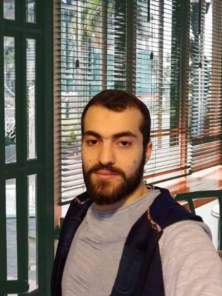

<div class="portfolio-section pb-0" id="about-section">
  <div class="container">
    <div class="row">
      <div class="col-12 col-lg-4 col-md-4  mx-auto text-center">
        
      </div>
      <div class="col-12 col-lg-8 col-md-8 "  data-aos="fade-left" data-aos-duration="1500">

        <p>I am an enthusiastic and versatile technologist with a passion for innovation and problem-solving. My proficiency spans various hard skills, including mastery of programming 
          languages such as <b>C</b>, <b>Java</b>, <b>Python</b>, and <b>C#</b>, and expertise in full-stack web development using <b>HTML</b>, <b>CSS</b>, <b>Bootstrap</b>, <b>Tailwind</b>, <b>JavaScript</b>, <b>Angular</b> and <b>ReactJs</b>. </p>

        <p> possess a robust backend aptitude, encompassing technologies like <b>PHP</b>, <b>ASP.Net Core</b>, and <b>Spring Boot</b>, coupled with <b>Git version control</b>. This enables me to craft resilient 
          applications that seamlessly integrate diverse components. </p>

        <p >My skills extend to desktop development with <b>JavaFX</b>, data management using <b>SQL</b> and <b>MYSQL</b> databases, and a solid grasp of design patterns like <b>MVC</b>. I excel in parallel 
          computing, threading, and <b>Linux</b> command-line operations, enhancing my ability to tackle complex challenges.</p>

        <p class=" text-center"  ><a fragment="contact-section" routerLink="/" class="btn btn-outline-black">Contact Me</a></p>    
      </div>
    </div>
  </div>
  </div>


